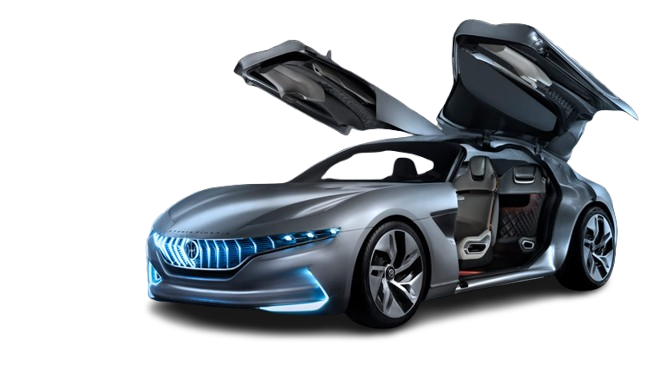

Transportation is expected to change dramatically over the next few decades as new technologies become more advanced. Many experts believe that self-driving vehicles will become common, allowing cars, buses, and trucks to travel safely without human drivers. These vehicles could reduce traffic accidents caused by human error, improve traffic flow, and make transportation more convenient for people of all ages. Electric vehicles will also continue replacing gasoline-powered cars, helping reduce air pollution and greenhouse gas emissions.
Public transportation is also likely to become faster, smarter, and more efficient. High-speed rail systems may connect cities in a fraction of the time it takes today, making long-distance travel easier and more affordable. Smart buses and trains could use artificial intelligence to optimize routes, reduce delays, and provide real-time updates to passengers. Cities may also invest more in eco-friendly transportation, such as electric buses, bike-sharing programs, and improved walking paths to reduce traffic congestion.
Air travel could experience major changes with the introduction of new technologies. Electric airplanes and aircraft powered by sustainable fuels may significantly reduce pollution while lowering operating costs. Some companies are developing flying taxis that could transport passengers above city traffic, cutting travel times dramatically. Although these innovations are still being tested, they have the potential to completely transform the way people travel in crowded urban areas.
Another major advancement may come from underground and space-based transportation systems. High-speed vacuum tube systems, such as the concept of the Hyperloop, could allow passengers to travel hundreds of miles in just a short amount of time. Space travel may also become more accessible as private companies continue developing reusable rockets and commercial spacecraft. In the future, traveling between countries—or even to space—could become much more common than it is today.
Overall, transportation in the future will likely be faster, cleaner, safer, and more connected than ever before. Advances in artificial intelligence, robotics, renewable energy, and engineering will continue shaping how people and goods move around the world. While challenges such as cost, safety regulations, and infrastructure improvements remain, these innovations have the potential to revolutionize everyday travel. As technology continues to evolve, transportation will play an important role in creating a more efficient and sustainable future for generations to come.
